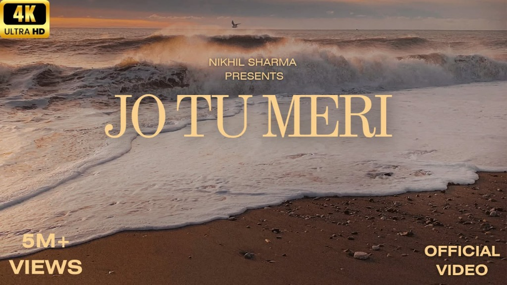
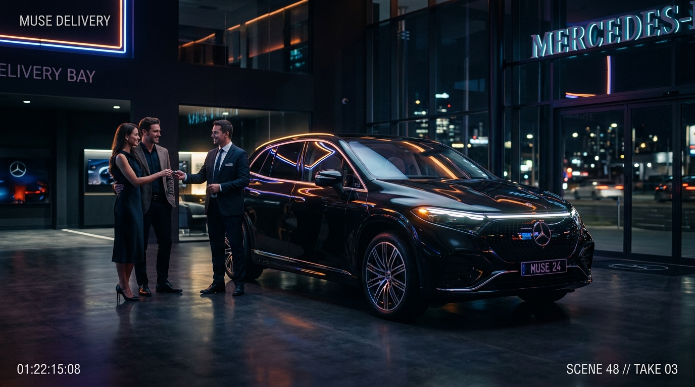
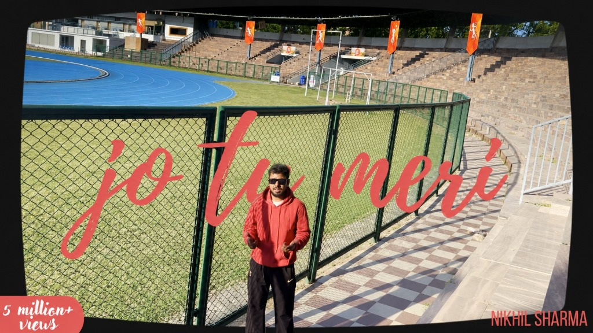

I design, build & ship — and I started at 10.
I'm Shourya — a 15-year-old from Madhya Pradesh who got obsessed with building things on the internet at age 10. Since then I've shipped 50+ projects across video editing, graphic design, and full-stack web development. Right now I'm building my own startup while taking on freelance work for founders who need things done fast and done right.
"Started entrepreneurship at age 10. Now building a startup destined to become a unicorn."
My entrepreneurial journey caught fire at age 10—fueled by relentless curiosity about how transformative digital products and media ventures are built, engineered, and scaled globally. What began with hands-on digital experiments quickly evolved into creating high-retention video stories, brand systems, and production web software.
By age 12, I had mastered node-based DaVinci color grading, kinetic motion graphics, and full-stack TypeScript frameworks. Today, at 15, I combine founder-grade entrepreneurial instincts with tri-discipline technical execution: currently architecting and scaling a breakthrough tech startup destined to achieve unicorn status, while executing boutique agency-level sprints for founders worldwide at unmatched velocity.
Video Editing & Motion Direction
Pacing, Sound Design, Motion Graphics & High-Retention Storytelling engineered for modern social algorithms and high-conversion commercial reels.

5M+ VIEWS 4K / 60FPS 03:45Jo Tu Meri — Music Video Edit
Full pacing, narrative flow, and node-based cinematic color grade in DaVinci Resolve for Nikhil Sharma's official music video. Engineered with coastal split-toning and rhythmic cut pacing (5M+ views).

COMMERCIAL REEL 4K DCI 01:15Cinematic Car Delivery Film
Dynamic automotive delivery reel crafted with precision pacing and cinematic node grading in DaVinci Resolve. Features dramatic lighting contrast, showroom reflections, audio risers, and impactful cut transitions.
Graphic Design & Visual Systems
Brand Identity, Typography, Spatial Balance & Scalable Visual Systems crafted with surgical vector precision and bold editorial tension.
Jo Tu Meri — Official Music Video Cover
Cinematic editorial typography, coastal dusk color grade, and high-CTR thumbnail architecture crafted for Nikhil Sharma's official release (5M+ views).

Jo Tu Meri — Vintage CRT & Script Artwork
Curved CRT television monitor mockup with custom red script lettering, trackside color grading, and viral thumbnail composition for Nikhil Sharma.
Web Architecture & Engineering
Pixel-Perfect Interfaces, Smooth Micro-Interactions & Modern Web Architecture built with scalable component design and blazingly fast runtimes.
Apex Flow — Cloud Analytics
Interactive real-time telemetry dashboard featuring interactive canvas graphs, modern design tokens, and Sub-100ms API responses.
Studio Kroma — Agency Site
Fluid agency showcase utilizing custom GLSL chromatic shaders, mouse-driven refraction physics, and seamless page routing transitions.
Pulse AI — Prompt Engine
Full-featured AI prompt generator with real-time vector embeddings, key-value parameter sliders, and cloud synchronizations.
// Output stream ready. Click 'Run' to generate...
Trusted by founders, YouTubers & agencies
Age is just a number. The proof lives in velocity, polish, and zero-compromise client delivery.
"Working with Shourya was surreal. His DaVinci color grades and sound pacing rival senior video editors with decades of tenure. He cut our product launch film in 48 hours."
"Shourya built the entire front-end of our SaaS analytics suite in Next.js and Tailwind. Clean code architecture, zero unnecessary dependencies, and insanely responsive UI."
"Our YouTube retention skyrocketed by 28% the very first month Shourya took over storytelling edits. He understands audience psychology instinctively."
Ready to build something unforgettable?
Choose a turnkey production sprint or configure a custom milestone-protected scope across high-retention video editing, visual brand systems, and modern web architecture. Zero agency bloat.